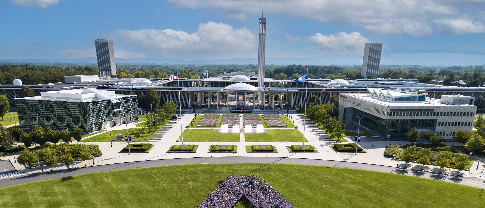

Open UAlbany CS PhD Position in Chong Liu Lab (Fall 2027)

Beautiful UAlbany Campus (Photo Credit: UAlbany Photo Database)
About me
I’m Chong Liu, an Assistant Professor of
Computer Science at the State University of New York at Albany (
UAlbany). I received my PhD in
Computer Science from the
University of California, Santa Barbara in 2023 and spent one year as a
Data Science Institute Postdoctoral Scholar at the
University of Chicago.
My work has been published in leading machine learning and AI venues such as ICML, ICLR, AISTATS, UAI, AAAI, AAMAS, JMLR, and JAIR. I currently serve as an Action Editor of TMLR, an Associate Editor of IEEE-TNNLS, and an Area Chair of NeurIPS 2026, ICLR 2027, and AISTATS 2027. I am also a founding organizer of the workshop series on AI for Drug Discovery and Development (
AI4D3) starting in 2023.
My research interests are broadly in Machine Learning and AI for Science:
- AI for scientific discovery and drug discovery
- Bayesian optimization and sequential decision-making
- Bandit algorithms and machine learning theory
- Reasoning-centric AI systems and agentic learning
- Quantum optimization and quantum machine learning
I’m looking for
one CS PhD student to join my lab at UAlbany
starting Fall 2027. I am particularly interested in students who would like to work on
AI for scientific discovery, including Bayesian optimization, sequential decision-making, drug discovery, lab-in-the-loop learning, and autonomous scientific experimentation. Strong applicants interested in my other research directions are also very welcome.
The position will be fully funded. More information can be found on my
personal homepage and
CS PhD program website.
What will I provide as a PhD advisor?
- A fully funded CS PhD position.
- Comprehensive, patient, and responsible research training, with close and regular research mentorship.
- A friendly and collaborative study and research environment with abundant computing resources.
- Opportunities to work on both fundamental machine learning problems and interdisciplinary applications in scientific discovery.
- Strong support for collaborations, conference travel, internships, research visits, award nominations, job hunting, and long-term career development.
- Opportunities to interact and collaborate with researchers across machine learning, medicine, drug discovery, engineering, and industry.
What do I expect from you?
- Be responsible and stay self-motivated. These qualities are essential for navigating the inherent uncertainty of research and making consistent progress toward becoming an independent researcher.
- Be curious and able to think in depth. Given a new idea or research problem that interests you, are you excited to dig into it, understand why it works, and identify what can be improved?
- Strong mathematical background, particularly in statistics, probability, linear algebra, and optimization, as well as solid coding skills with programming languages and modern ML/AI development tools.
- Bachelor’s degree (or higher) in computer science, mathematics, statistics, engineering, or related areas.
- Meaningful prior research experience in machine learning, AI, optimization, computational science, or closely related areas is strongly preferred.
- First-author publications at strong ML/AI or related scientific venues are a significant plus, but are not required. I especially value evidence that you can take ownership of a research problem, develop ideas, conduct careful experiments or theoretical analysis, and communicate your results clearly.
Why UAlbany Computer Science?
- Founded in 1967, UAlbany CS has a rich history with two Turing Award laureates (an alumnus and a former faculty member). The department has expanded substantially in recent years, especially in machine learning, artificial intelligence, data science, and related areas.
- AI research at UAlbany is growing rapidly. UAlbany’s AI Plus initiative has brought major investments in AI faculty, research, education, and computing infrastructure. The university now operates a large on-campus AI supercomputing system based on NVIDIA DGX systems, providing substantial GPU resources for modern machine learning research.
- UAlbany is part of New York State’s Empire AI initiative and is actively involved in expanding access to advanced AI computing and research across SUNY and New York State.
- UAlbany and IBM established the Center for Emerging Artificial Intelligence Systems (CEAIS), a $20 million collaboration supporting joint AI research using advanced cloud computing and emerging IBM AI hardware.
- UAlbany also has growing strengths in AI for science and biomedicine. The university has significant research programs in RNA science, biomedical research, atmospheric science, nanotechnology, and semiconductors, creating many opportunities for interdisciplinary AI research. Recent investments in UAlbany’s RNA and life-sciences research further strengthen opportunities at the intersection of AI and drug discovery.
- The Capital Region has a strong technology ecosystem in AI, semiconductors, nanotechnology, and advanced computing. The Albany NanoTech Complex, IBM Research activities, and GlobalFoundries are all located in the region, creating additional opportunities for collaboration and internships.
Why Albany, NY?
- As the capital city of New York State, Albany is a mid-size city where you can enjoy both convenient city life and a comfortable living environment.
- Albany has abundant living resources with a substantially lower cost of living than many major research and technology hubs in the US.
- Albany is conveniently located in the Northeast. New York City is approximately 2.5 hours away by car or train, Boston is about 2.5–3 hours by car, and Montreal is about 3.5 hours away. Albany International Airport also provides convenient connections to major US cities.
- The Capital Region is also close to the Adirondacks, Catskills, lakes, and many other outdoor destinations, with abundant opportunities for hiking, skiing, and other year-round activities.
Join us!
Feel free to drop me an email to
cliu24 AT albany.edu including the following information. Hope to see you in Albany!
- Email title: "Fall 2027 UAlbany CS PhD Application by [[Your_Name]]".
- Your research interests in several sentences, including why you are interested in working with my lab.
- Briefly describe one research problem or direction that you are currently most interested in. It does not need to exactly match one of my current projects.
- Attach your CV, undergrad transcript, and a representative writing sample (paper/preprint/thesis if any).
Please note that contacting me by email does not replace the formal application to the UAlbany CS PhD program. Applicants who would like to be considered for admission should also submit an official application through the university.